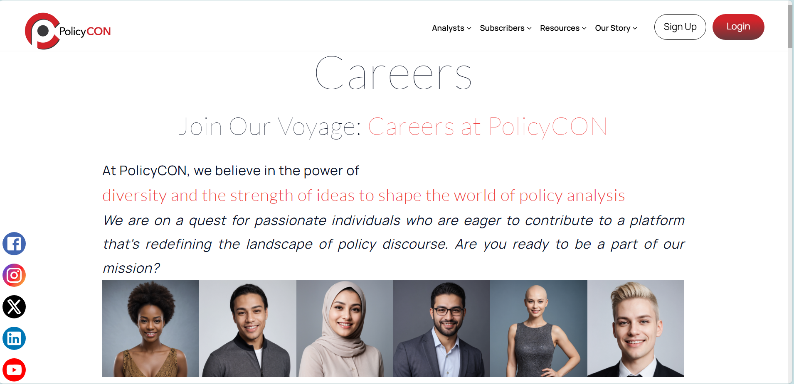
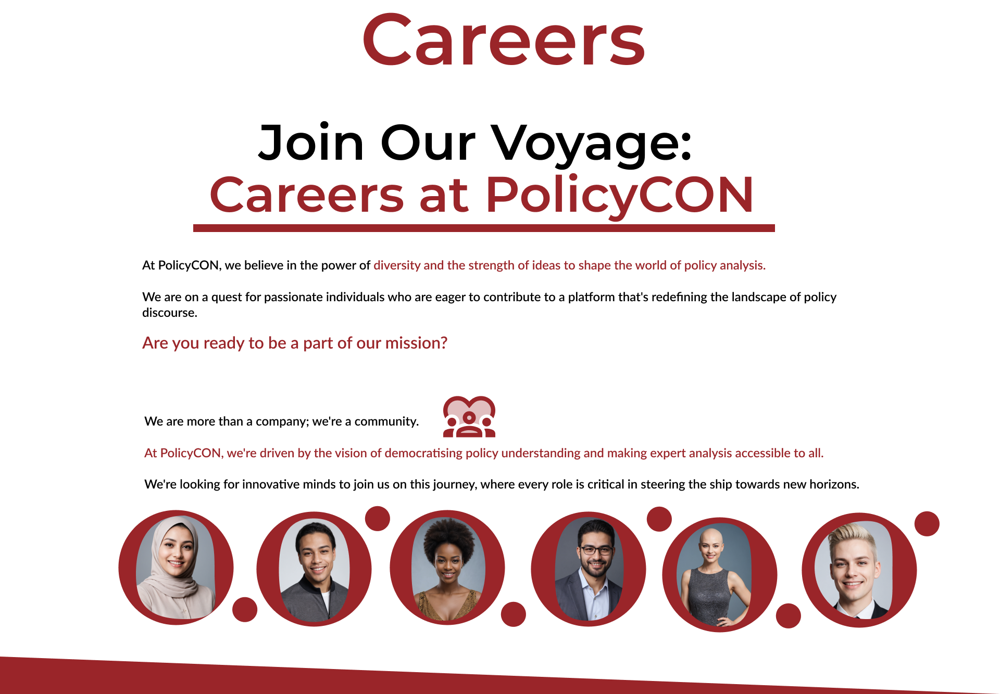
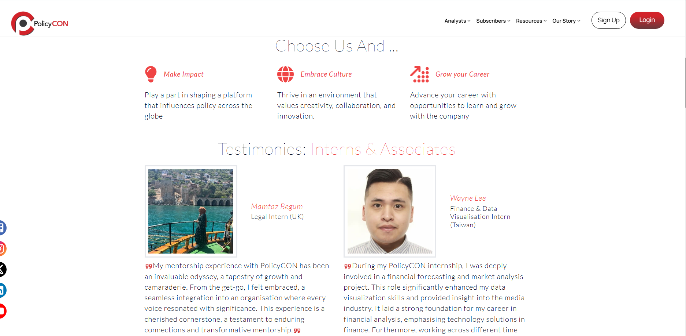
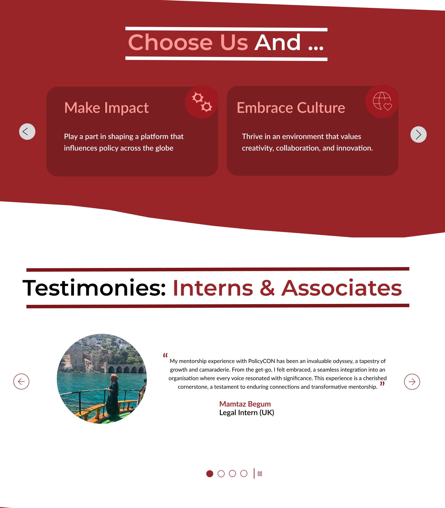
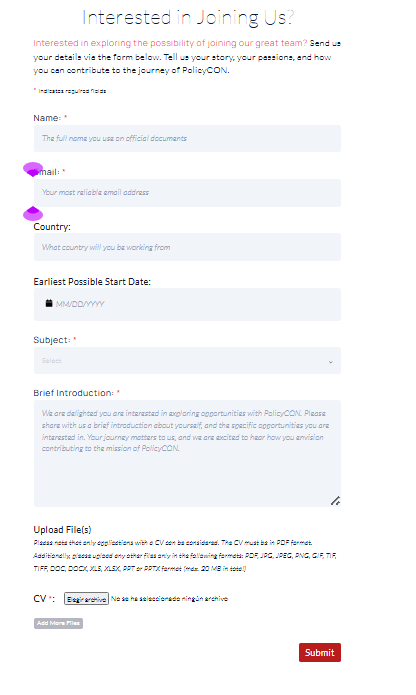
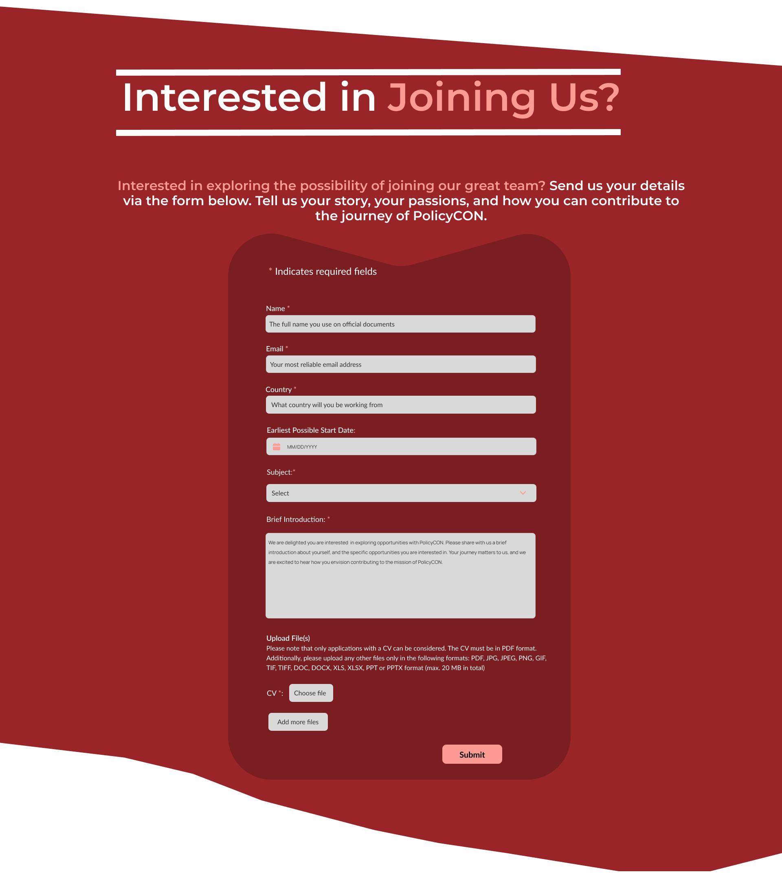

Simplified, inclusive job discovery for every candidate.
This redesign improves how users browse and apply for jobs. We created a cleaner structure, added mobile-first design, and made navigation more intuitive to support every applicant's journey.
I analyzed existing careers pages, identified pain points, and reviewed accessibility heuristics to understand user needs and navigation challenges.
Low-fidelity wireframes helped test layout ideas early and focus on hierarchy and flow before applying any visual styling.
I applied a neutral, professional aesthetic with improved spacing, modern typography, and accessible color contrasts for better usability.
Created an interactive prototype and iterated based on feedback, ensuring smooth navigation and mobile-first performance.
Before
After
Before
After
Before
After
“Redesigning careers pages means creating opportunities for every candidate to connect with their future.”